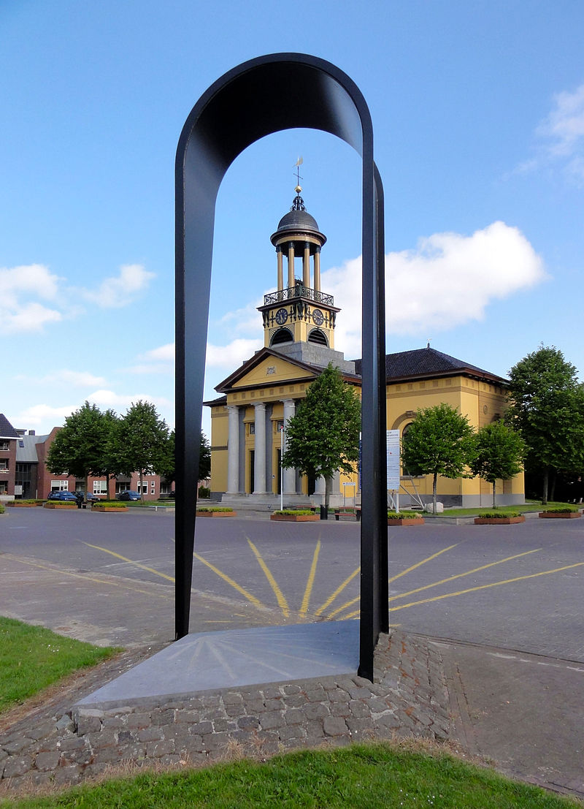
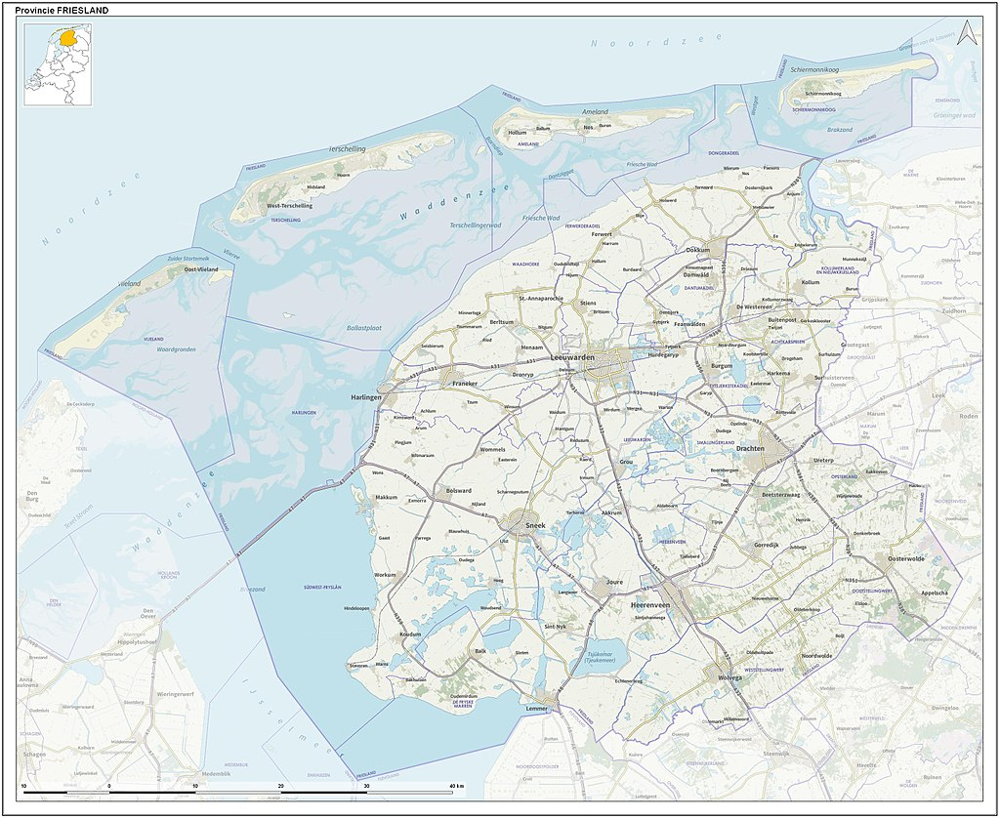

5 feitjes
- Sint-Jacobiparochie is een dorp in Friesland
- De Friese benaming is Sint-Jabik
- Sint-Jacobiparochie is de start van de pelgrimsroute
- Sint-Jacobiparochie is een klein dorp
- In Sint-Jacobiparochie wordt er voornamelijk Bildts gesproken
 Sint Jacobiparochie is de startplaats van het Jabikspaad, de Friese Camino de Santiago. Het Jabikspaad is 130 kilometer lang en loopt naar Hasselt. Volgens de overlevering droomde Keizer Karel de Grote over een weg van sterren, die van de Friese Zee via Europa naar Santiago de Compostela in Spanje liep. Ooit zou een Friese boeteling van Sint Jacobiparochie naar Spanje zijn gelopen. In 2000 werd het Jabikspaad voorzien van bewegwijzering. In tegenstelling tot de andere Europese Jacobswegen, is het symbool van het Jabikspaad niet de Sint Jacobsschelp, maar de Wulk. In het voorportaal van de Groate Kerk is het pelgriminformatiecentrum, dat iedere 2e en 4e zaterdag van de maand open is van 11.00 tot 15.00 uur.
Sint Jacobiparochie ontstond in 1505, toen Het Bildt door arbeiders uit onder meer Zuid-Holland, Zeeland en Friesland werd ingedijkt. De plaats heette aanvankelijk Wijngaarden, naar het Zuid-Hollandse Wijngaarden waar de nieuwe bewoners vandaan kwamen. Het nieuwe Wijngaarden vormde een rooms-katholieke parochie die aan de apostel Jacobus was gewijd. Na verloop van tijd werd de naam van de parochie meer en meer gebruikt voor het dorp. Sint Jacobiparochie heeft als zelfstandige gemeente alleen bestaan tussen 1-1-1812 en 1-10-1816[2]. Daarna, tot 1-1-2018, behoorde het dorp tot de gemeente het Bildt.